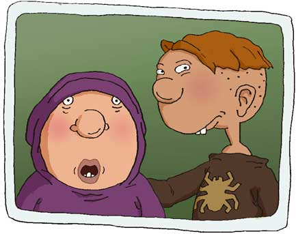

CARL FOUTLEY
Highly bizarre with a sense of humor that borders on perverse, Carl is the youngest Foutley and often the only man in the house.
Carl specializes in the abnormal, forever looking to recruit a new participant in some gory plan.
Carl relies heavily on shock value and gets cranky when he can't gross you out.
Carl believes he is ahead of his years and finds adults generally threatened by his infinite powers.
Carl's best friend is Hoodsey Bishop though Carl acknowledges he has work to do on Hoodsey, in order to make him the perfect accomplice.
Carl speaks several additional languages, none of them known to man.
THREE THINGS YOU'D FIND STUFFED IN CARL'S POCKETS:
- Vile of sulfur swiped from the Science Lab
- Cold veal cutlet
- Micro-recorder pen with infra-red laser pointer capabilities
HOODSEY BISHOP
Robert "Hoodsey" Bishop is Dodie's little brother and Carl's best friend.
Highly gullible and easily "guilted" into anything, Hoodsey has a perpetual look of apology on his round face�probably along with some food residue.
Hoodsey greatly admires Carl but often appears victimized by Carl's elaborate schemes.
Left to his own devices, Hoodsey would probably just eat cereal in front of the TV-- but Carl gets him out into the world.
Hoodsey is a bit of a mama's boy.
THREE THINGS YOU'D FIND IN HOODSEY�S CUBBY:
- Half-eaten ham sandwich
- Mold
- Spare pair of underwear